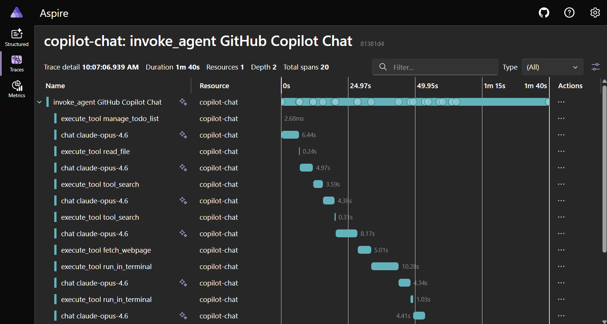

使用 OpenTelemetry 监控智能体使用情况
本文介绍如何在 VS Code 中为 Copilot Chat 智能体交互启用和配置 OpenTelemetry 监控。
Copilot Chat 可以通过 OpenTelemetry（OTel）导出追踪、指标和事件，让你能够了解智能体交互、LLM 调用、工具执行和令牌使用情况。所有信号名称和属性均遵循 OTel GenAI 语义约定，因此数据可与任何兼容 OTel 的后端配合使用。
收集的数据
Copilot Chat 会发送三种类型的 OTel 信号：追踪、指标和事件。
属性命名空间
Copilot Chat 在三个命名空间下发送 OTel 属性：
| 命名空间 | 来源 | 使用场景 | ||
|---|---|---|---|---|
| --- | --- | --- | ||
gen_ai.* | OTel GenAI 语义约定 | 当存在标准键时使用 | ||
github.copilot.* | 规范的 Copilot 专用命名空间，与 GitHub Copilot CLI OpenTelemetry 约定共享 | 推荐用于新的仪表板、警报和查询 | ||
copilot_chat.* | 原始的 VS Code 扩展命名空间 | 旧版。若干键现在同时与 github.copilot.* 等效键双重发送 |
旧版 copilot_chat.* 键会无限期继续发送，以便现有的收集器、仪表板和下游消费者无需更改即可继续工作。没有停用日期。本节中的表格将双重发送的行标记为旧版，并附上指向首选键的说明。
追踪
每次智能体交互都会生成一个层次化的跨度树，捕获完整的执行流程：
invoke_agent copilot [~15s]
├── chat gpt-4o [~3s] (LLM 请求工具调用)
├── execute_tool readFile [~50ms]
├── execute_tool runCommand [~2s]
├── chat gpt-4o [~4s] (LLM 生成最终响应)
└── （跨度结束）当智能体调用子智能体时（例如，通过 runSubagent 工具），追踪上下文会自动传播。子智能体的 invoke_agent 跨度会作为父智能体 execute_tool 跨度的子级出现，从而在异步边界上产生一个连接的追踪树。
invoke_agent 跨度
包装整个智能体编排过程，包括所有 LLM 调用和工具执行。
| 属性 | 说明 | ||
|---|---|---|---|
| --- | --- | ||
gen_ai.operation.name | 始终为 invoke_agent | ||
gen_ai.provider.name | 提供程序（例如，github） | ||
gen_ai.agent.name | 智能体名称（例如，copilot、copilotcli、claude） | ||
gen_ai.conversation.id | 对话会话 ID | ||
gen_ai.request.model | 请求的模型 | ||
gen_ai.response.model | 解析后的模型 | ||
gen_ai.usage.input_tokens | 整个会话的输入令牌总数 | ||
gen_ai.usage.output_tokens | 整个会话的输出令牌总数 | ||
gen_ai.usage.cache_read.input_tokens | 缓存读取输入令牌（可用时） | ||
gen_ai.usage.cache_creation.input_tokens | 缓存创建输入令牌（可用时） | ||
github.copilot.agent.type | builtin、custom 或 plugin | ||
github.copilot.git.repository | 仓库远程 URL（位于 Git 仓库中时） | ||
github.copilot.git.branch | 活动分支（位于 Git 仓库中时） | ||
github.copilot.git.commit_sha | 当前提交（位于 Git 仓库中时） | ||
github.copilot.github.org | GitHub 组织所有者（仅限 GitHub 远程仓库） | ||
copilot_chat.repo.remote_url | 旧版。推荐使用 github.copilot.git.repository | ||
copilot_chat.repo.head_branch_name | 旧版。推荐使用 github.copilot.git.branch | ||
copilot_chat.repo.head_commit_hash | 旧版。推荐使用 github.copilot.git.commit_sha | ||
copilot_chat.turn_count | 此会话中的 LLM 往返次数 | ||
error.type | 错误类别（发生故障时） | ||
gen_ai.input.messages | 完整的提示消息（仅限内容捕获） | ||
gen_ai.output.messages | 完整的响应消息（仅限内容捕获） | ||
gen_ai.tool.definitions | 工具模式（仅限内容捕获） |
chat 跨度
每次 LLM API 调用对应一个跨度。
| 属性 | 说明 | ||
|---|---|---|---|
| --- | --- | ||
gen_ai.operation.name | 始终为 chat | ||
gen_ai.provider.name | 提供程序名称 | ||
gen_ai.request.model | 请求的模型 | ||
gen_ai.response.model | 解析后的模型 | ||
gen_ai.response.finish_reasons | 停止原因（例如，["stop"]） | ||
gen_ai.request.max_tokens | 最大输出令牌数 | ||
gen_ai.request.temperature | 温度参数（设置时） | ||
gen_ai.request.top_p | Top-p 参数（设置时） | ||
gen_ai.usage.input_tokens | 此次调用的输入令牌数 | ||
gen_ai.usage.output_tokens | 此次调用的输出令牌数 | ||
gen_ai.usage.cache_read.input_tokens | 缓存读取输入令牌（可用时） | ||
gen_ai.usage.cache_creation.input_tokens | 缓存创建输入令牌（可用时） | ||
gen_ai.usage.reasoning.output_tokens | 推理令牌（可用时） | ||
gen_ai.usage.reasoning_tokens | 旧版。推荐使用 gen_ai.usage.reasoning.output_tokens | ||
copilot_chat.time_to_first_token | 首 SSE 令牌到达时间（毫秒） | ||
server.address | API 主机名 | ||
error.type | 错误类别（发生故障时） |
execute_tool 跨度
每次工具调用对应一个跨度。
| 属性 | 说明 | ||
|---|---|---|---|
| --- | --- | ||
gen_ai.operation.name | 始终为 execute_tool | ||
gen_ai.tool.name | 工具名称（例如，readFile） | ||
gen_ai.tool.type | function 或 extension（MCP 工具） | ||
gen_ai.tool.call.id | 工具调用标识符 | ||
github.copilot.tool.parameters.edit_type | 编辑工具：create、update、str_replace 或 insert | ||
github.copilot.tool.parameters.skill_name | 技能调用 | ||
github.copilot.tool.parameters.mcp_server_name_hash | MCP 工具：服务名称的 SHA-256 | ||
github.copilot.tool.parameters.mcp_tool_name | MCP 工具：被调用的工具名称 | ||
github.copilot.tool.parameters.command | Shell 工具（仅限内容捕获，已截断） | ||
github.copilot.tool.parameters.file_path | 文件工具（仅限内容捕获） | ||
github.copilot.tool.parameters.mcp_server_name | MCP 工具（仅限内容捕获） | ||
error.type | 错误类别（发生故障时） | ||
gen_ai.tool.call.arguments | 工具输入参数（仅限内容捕获） | ||
gen_ai.tool.call.result | 工具输出（仅限内容捕获） |
execute_hook 跨度
每次钩子执行对应一个跨度（例如，PreToolUse、Stop）。
| 属性 | 说明 | ||
|---|---|---|---|
| --- | --- | ||
gen_ai.operation.name | 始终为 execute_hook | ||
github.copilot.hook.decision | pass、block 或 non_blocking_error | ||
github.copilot.hook.duration | 钩子执行时长（秒） | ||
github.copilot.hook.tool_names | 钩子作用范围内的工具，以 JSON 数组表示 | ||
copilot_chat.hook_type | 钩子事件（例如，PreToolUse） | ||
copilot_chat.hook_result_kind | success、error 或 non_blocking_error | ||
copilot_chat.hook_input | 钩子输入负载（已截断） | ||
copilot_chat.hook_output | 钩子标准输出（成功时，已截断） | ||
error.type | 错误类别（发生故障时） |
指标
GenAI 语义约定指标：
| 指标 | 类型 | 说明 | ||
|---|---|---|---|---|
| --- | --- | --- | ||
gen_ai.client.operation.duration | 直方图 | LLM API 调用时长（秒） | ||
gen_ai.client.token.usage | 直方图 | 令牌计数（输入和输出） |
扩展专用指标：
| 指标 | 类型 | 说明 | ||
|---|---|---|---|---|
| --- | --- | --- | ||
copilot_chat.tool.call.count | 计数器 | 按名称和成功与否统计的工具调用次数 | ||
copilot_chat.tool.call.duration | 直方图 | 工具执行延迟（毫秒） | ||
copilot_chat.agent.invocation.duration | 直方图 | 智能体端到端时长（秒） | ||
copilot_chat.agent.turn.count | 直方图 | 每次智能体调用的 LLM 往返次数 | ||
copilot_chat.session.count | 计数器 | 已启动的聊天会话数量 | ||
copilot_chat.time_to_first_token | 直方图 | 首 SSE 令牌到达时间（秒） |
智能体活动和结果指标跟踪跨所有界面（内联聊天、本地智能体、Copilot CLI 智能体、Claude 智能体和 Copilot 编码智能体）的智能体代码更改：
| 指标 | 类型 | 说明 | ||
|---|---|---|---|---|
| --- | --- | --- | ||
copilot_chat.edit.acceptance.count | 计数器 | 编辑接受和拒绝决策（内联聊天、聊天编辑、代码块级别） | ||
copilot_chat.chat_edit.outcome.count | 计数器 | 文件级聊天编辑会话结果（已接受、已拒绝、已保存） | ||
copilot_chat.lines_of_code.count | 计数器 | 已接受的智能体编辑所添加或删除的代码行数 | ||
copilot_chat.edit.survival.four_gram | 直方图 | 4-gram 文本相似度留存评分（0-1） | ||
copilot_chat.edit.survival.no_revert | 直方图 | 无回退留存评分（0-1） | ||
copilot_chat.user.action.count | 计数器 | 用户参与操作：复制、插入、应用、追问 | ||
copilot_chat.user.feedback.count | 计数器 | 对聊天回复的点赞和点踩投票 | ||
copilot_chat.agent.edit_response.count | 计数器 | 按成功或错误统计的智能体编辑响应 | ||
copilot_chat.agent.summarization.count | 计数器 | 上下文摘要结果（已应用、失败） | ||
copilot_chat.pull_request.count | 计数器 | 通过 CLI 智能体创建的拉取请求 | ||
copilot_chat.cloud.session.count | 计数器 | 按合作智能体统计的云和远程智能体会话 | ||
copilot_chat.cloud.pr_ready.count | 计数器 | 远程智能体任务 PR 就绪通知 |
指标包含用于筛选的属性，例如 gen_ai.request.model、gen_ai.provider.name、gen_ai.tool.name、copilot_chat.edit.source 和 error.type。
事件
| 事件 | 说明 | ||
|---|---|---|---|
| --- | --- | ||
gen_ai.client.inference.operation.details | 完整的 LLM 调用元数据，包含模型、令牌和结束原因 | ||
copilot_chat.session.start | 新聊天会话开始时发送 | ||
copilot_chat.tool.call | 每次工具调用，包含时间信息和错误详情 | ||
copilot_chat.agent.turn | 每次 LLM 往返，包含令牌计数 | ||
copilot_chat.edit.feedback | 用户接受或拒绝文件级智能体编辑 | ||
copilot_chat.edit.hunk.action | 用户接受或拒绝单个代码块 | ||
copilot_chat.inline.done | 内联聊天编辑被接受或拒绝 | ||
copilot_chat.edit.survival | AI 生成的代码在接受后留存情况的定期测量 | ||
copilot_chat.user.feedback | 用户对聊天回复投票（点赞或点踩） | ||
copilot_chat.cloud.session.invoke | 云或远程智能体会话已启动 |
资源属性
所有信号均携带以下资源属性：
| 属性 | 值 | ||
|---|---|---|---|
| --- | --- | ||
service.name | copilot-chat（可通过 OTEL_SERVICE_NAME 配置） | ||
service.version | 扩展版本 | ||
session.id | 每个 VS Code 窗口的唯一标识 |
使用 OTEL_RESOURCE_ATTRIBUTES 添加自定义资源属性，以按团队、部门或其他组织边界进行筛选：
export OTEL_RESOURCE_ATTRIBUTES="team.id=platform,department=engineering"内容捕获
默认情况下，不会捕获任何提示内容、响应或工具参数。仅包含模型名称、令牌计数和时长等元数据。
要捕获完整内容，启用 setting(github.copilot.chat.otel.captureContent) 设置或将 COPILOT_OTEL_CAPTURE_CONTENT=true 设为环境变量。这将向跨度属性填充完整的提示消息、响应消息、系统提示、工具模式、工具参数和工具结果。
[!CAUTION]
内容捕获可能包含敏感信息，如代码、文件内容和用户提示。请仅在受信任的环境中启用此功能。
启用 OTel 监控
当以下任一条件为真时，OTel 将被激活：
setting(github.copilot.chat.otel.enabled)为truesetting(github.copilot.chat.otel.dbSpanExporter.enabled)为trueCOPILOT_OTEL_ENABLED=true- 已设置
OTEL_EXPORTER_OTLP_ENDPOINTVS Code 设置
打开设置（kb(workbench.action.openSettings)）并搜索 copilot otel：
| 设置 | 类型 | 默认值 | 说明 | ||
|---|---|---|---|---|---|
| --- | --- | --- | --- | ||
setting(github.copilot.chat.otel.enabled) | boolean | false | 启用 OTel 发送 | ||
setting(github.copilot.chat.otel.exporterType) | string | "otlp-http" | otlp-http、otlp-grpc、console 或 file | ||
setting(github.copilot.chat.otel.otlpEndpoint) | string | "http://localhost:4318" | OTLP 收集器端点 | ||
setting(github.copilot.chat.otel.captureContent) | boolean | false | 捕获完整的提示和响应内容 | ||
setting(github.copilot.chat.otel.maxAttributeSizeChars) | integer | 0 | 每个内容属性（提示、工具参数、工具结果）的最大字符数。0 禁用截断。设置正值以匹配后端的单属性大小限制。 | ||
setting(github.copilot.chat.otel.outfile) | string | "" | JSON 行输出文件路径 | ||
setting(github.copilot.chat.otel.dbSpanExporter.enabled) | boolean | false | 将 OTel 跨度持久化到本地 SQLite 数据库，供 Chat: Export Agent Traces DB 命令使用。隐式启用 OTel。 |
环境变量
环境变量始终优先于 VS Code 设置。
| 变量 | 默认值 | 说明 | ||
|---|---|---|---|---|
| --- | --- | --- | ||
COPILOT_OTEL_ENABLED | false | 启用 OTel。设置 OTEL_EXPORTER_OTLP_ENDPOINT 时也会启用。 | ||
COPILOT_OTEL_ENDPOINT | OTLP 端点 URL（优先于 OTEL_EXPORTER_OTLP_ENDPOINT） | |||
OTEL_EXPORTER_OTLP_ENDPOINT | 标准 OTel OTLP 端点 URL | |||
OTEL_EXPORTER_OTLP_PROTOCOL | http/protobuf | OTLP 协议。仅 grpc 会改变行为。 | ||
COPILOT_OTEL_PROTOCOL | 覆盖 OTLP 协议（grpc 或 http）。优先于 OTEL_EXPORTER_OTLP_PROTOCOL。 | |||
OTEL_SERVICE_NAME | copilot-chat | 资源属性中的服务名称 | ||
OTEL_RESOURCE_ATTRIBUTES | 额外的资源属性（key1=val1,key2=val2） | |||
COPILOT_OTEL_CAPTURE_CONTENT | false | 捕获完整的提示和响应内容 | ||
COPILOT_OTEL_MAX_ATTRIBUTE_SIZE_CHARS | 0 | 覆盖内容属性的最大字符大小。0 禁用截断。优先于 maxAttributeSizeChars 设置。 | ||
COPILOT_OTEL_LOG_LEVEL | info | 最低日志级别：trace、debug、info、warn 或 error。 | ||
COPILOT_OTEL_FILE_EXPORTER_PATH | 将所有信号作为 JSON 行写入此文件。 | |||
COPILOT_OTEL_HTTP_INSTRUMENTATION | false | 启用 HTTP 级 OTel 工具化。 | ||
OTEL_EXPORTER_OTLP_HEADERS | 身份验证标头（例如，Authorization=Bearer token） |
命令
当 setting(github.copilot.chat.otel.dbSpanExporter.enabled) 为 true 时，Copilot Chat 会将 OTel 跨度持久化到本地 SQLite 数据库中。这对于离线检查或在无需运行 OTLP 后端的情况下共享追踪数据非常有用。
| 命令 | 说明 | ||
|---|---|---|---|
| --- | --- | ||
Chat: Export Agent Traces DB（github.copilot.chat.otel.exportAgentTracesDB） | 将本地 SQLite 跨度数据库导出为 .db 文件。仅在 dbSpanExporter.enabled 设置为 true 时可用。 |
后台智能体和 Claude 智能体的追踪结构
当 OTel 启用时，所有智能体类型都会自动被工具化。启用前台智能体追踪的设置同样也会启用 Copilot CLI 和 Claude 智能体的追踪。
Copilot CLI（后台智能体）
Copilot CLI SDK 在与聊天扩展相同的 VS Code 进程中运行，并生成丰富的追踪层次结构，包括子智能体、权限、钩子和工具调用。扩展包装跨度（invoke_agent copilotcli，服务为 copilot-chat）是 SDK 原生跨度（服务为 github-copilot）的父级。两者都会出现在你的收集器的同一追踪中。
CLI 会话还会在 VS Code 的智能体调试日志面板中显示完整的 SDK 层次结构，与追踪查看器中显示的内容相同。即使 OTel 导出已禁用，调试面板也能正常工作，因为 SDK 的内部追踪始终为面板而保持活动。
当 OTel 导出禁用时，调试面板会自动捕获完整的提示和响应内容。当 OTel 导出启用时，setting(github.copilot.chat.otel.captureContent) 设置同时控制调试面板和 OTLP 导出的内容捕获。
Copilot CLI（终端会话）
使用 New Copilot CLI Session 启动的终端 CLI 会话运行在单独的进程中。当 OTel 启用时，扩展会将 COPILOT_OTEL_ENABLED 和 OTEL_EXPORTER_OTLP_ENDPOINT 转发到终端进程。终端追踪作为独立的根追踪出现，服务为 github-copilot，不会链接到扩展追踪。
CLI 运行时仅支持 otlp-http。当配置为 otlp-grpc 时，终端 CLI 仍使用 HTTP。在同一端口上同时支持两种协议的后端（如 Aspire Dashboard）可透明工作。
Claude 智能体
当 OTel 启用时，Claude 智能体会话会在服务 copilot-chat 下生成遵循 GenAI 语义约定的扩展级跨度。扩展通过拦截 Claude SDK 消息并通过本地 HTTP 服务器代理 LLM 调用来创建跨度。
invoke_agent claude 根跨度包装每个用户请求，其中嵌套了 chat、execute_tool 和 execute_hook 跨度。当工具为 Agent（Claude 子智能体调用）时，其下会嵌套子级 chat 和 execute_tool 跨度，提供完整的子智能体可见性。
按智能体类型筛选
在追踪查看器中，按 service.name 筛选以查看来自特定智能体运行时的追踪：
service.name | 来源 | ||
|---|---|---|---|
| --- | --- | ||
copilot-chat | 前台智能体、CLI 包装器和 Claude 智能体跨度（扩展发送） | ||
github-copilot | CLI SDK 原生跨度和 CLI 终端会话 | ||
claude-code | Claude Code 子进程 SDK 遥测（当转发 CLAUDE_CODE_ENABLE_TELEMETRY 时） |
在 copilot-chat 服务中，通过 gen_ai.agent.name 区分智能体类型：
gen_ai.agent.name | 智能体类型 | ||
|---|---|---|---|
| --- | --- | ||
GitHub Copilot Chat | 前台智能体（智能体模式） | ||
copilotcli | CLI 包装器跨度 | ||
claude | Claude 智能体 |
与可观测性后端配合使用
Copilot Chat 的 OTel 输出可与任何支持 OTLP 协议的后端配合使用。将 setting(github.copilot.chat.otel.otlpEndpoint) 设置或 OTEL_EXPORTER_OTLP_ENDPOINT 环境变量指向后端的 OTLP 接收 URL，并配置导出器类型以匹配后端的协议（otlp-http 或 otlp-grpc）。
Aspire Dashboard
Aspire Dashboard 是本地开发最简单的选项。它是一个内置 OTLP 端点和追踪查看器的独立应用，无需云账户。
你可以使用 Aspire CLI 启动仪表板：
aspire dashboard run或从其 Docker 容器镜像运行相同的独立仪表板：
docker run --rm -d -p 18888:18888 -p 4318:18890 --name aspire-dashboard \
mcr.microsoft.com/dotnet/aspire-dashboard:latestVS Code 配置：
{
"github.copilot.chat.otel.enabled": true,
"github.copilot.chat.otel.captureContent": true
}打开 http://localhost:18888 并转到 Traces 查看你的智能体交互跨度。

Jaeger
Jaeger 是一个开源的分布式追踪平台，可直接接收 OTLP。
docker run -d --name jaeger -p 16686:16686 -p 4318:4318 jaegertracing/jaeger:latestVS Code 配置：
{
"github.copilot.chat.otel.enabled": true,
"github.copilot.chat.otel.otlpEndpoint": "http://localhost:4318"
}打开 http://localhost:16686，选择服务 copilot-chat，然后选择 Find Traces。
Azure Application Insights
使用 OTel 收集器和 Azure Monitor 导出器将 Copilot Chat 遥测转发到 Application Insights。将 VS Code 的 setting(github.copilot.chat.otel.otlpEndpoint) 设置指向收集器的 OTLP 端点，并配置收集器导出到你的 Application Insights 连接字符串。
有关端到端设置和现成仪表板，请参阅 使用 Grafana 监控 AI 编码智能体。该指南详细介绍了运行 OTel 收集器、将 VS Code 指向收集器以及导入预构建的 Azure Managed Grafana 仪表板的步骤。该仪表板可以从 Application Insights 可视化 Copilot 操作、输入和输出令牌、聊天会话、工具调用以及按模型划分的响应时间和 TTFT。
Langfuse
Langfuse 是一个开源的 LLM 可观测性平台，原生支持 OTLP 接收和 OTel GenAI 语义约定。
VS Code 配置：
{
"github.copilot.chat.otel.enabled": true,
"github.copilot.chat.otel.otlpEndpoint": "http://localhost:3000/api/public/otel",
"github.copilot.chat.otel.captureContent": true
}使用 OTEL_EXPORTER_OTLP_HEADERS 环境变量设置身份验证标头。详情请参阅 Langfuse OTel 文档。
其他后端
任何兼容 OTLP 的后端均可使用，包括 Grafana Tempo、Honeycomb 和 Datadog。请参阅各后端的文档了解 OTLP 接收设置。
其他导出器示例
默认导出器为 otlp-http。你可以切换到 otlp-grpc、console 或 file 以适配你的后端或调试工作流。
OTLP/gRPC：
{
"github.copilot.chat.otel.enabled": true,
"github.copilot.chat.otel.exporterType": "otlp-grpc",
"github.copilot.chat.otel.otlpEndpoint": "http://localhost:4317"
}控制台输出（快速调试）：
{
"github.copilot.chat.otel.enabled": true,
"github.copilot.chat.otel.exporterType": "console"
}基于文件的输出（离线或 CI）：
{
"github.copilot.chat.otel.enabled": true,
"github.copilot.chat.otel.exporterType": "file",
"github.copilot.chat.otel.outfile": "/tmp/copilot-otel.jsonl"
}远程收集器的身份验证标头只能通过 OTEL_EXPORTER_OTLP_HEADERS 环境变量配置（例如，Authorization=Bearer your-token）。
安全与隐私
OTel 监控默认处于关闭状态，在你明确启用之前不会发送任何数据。你可以控制收集的内容及其去向。
| 方面 | 详情 | ||
|---|---|---|---|
| --- | --- | ||
| 默认关闭 | 除非你明确启用，否则不会发送任何 OTel 数据。禁用时不会加载 OTel SDK，运行时开销为零。 | ||
| 默认无内容 | 提示、响应和工具参数需要通过 captureContent 主动选择加入。 | ||
| 默认属性中无 PII | 会话 ID、模型名称和令牌计数不属于个人身份信息。 | ||
| 用户配置的端点 | 数据只发送到你指定的目标。不存在回传行为。 |